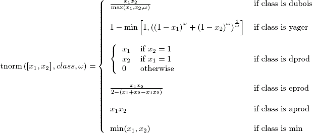

Examples
x=rand(5,2); y1=tnorm(x,"dubois",0.5); y2=tnorm(x,"yager",2); y3=tnorm(x,"dprod"); y4=tnorm(x,"aprod"); y5=tnorm(x,"min"); |  |  |
Fuzzy Logic S-Norm (AND)
y=tnorm( x , class [,class_par] )
matrix of real with size [m,n].
matrix of real with size [m,1].
string, t-norm class. The values can be: "dubois" for Dubois-Prade T-Norm, "yager" for Yager T-Norm, "dprod" for drastic product T-Norm, "eprod" for Einstein product T-Norm, "aprod" for algebraic product T-Norm, "min" for minimum S-Norm.
scalar, T-Norm class parameter. "dubois" and "yager" class need this parameter.
tnorm compute T-Norm class of x
with parameter class_par. The calculation was made taking the
j row of x as input and put the resulting value in the j row
of y (row oriented calculation).
"dubois" class need 0<=class_par<=1.
"yager"class need class_par>0.

x=rand(5,2); y1=tnorm(x,"dubois",0.5); y2=tnorm(x,"yager",2); y3=tnorm(x,"dprod"); y4=tnorm(x,"aprod"); y5=tnorm(x,"min"); | | |